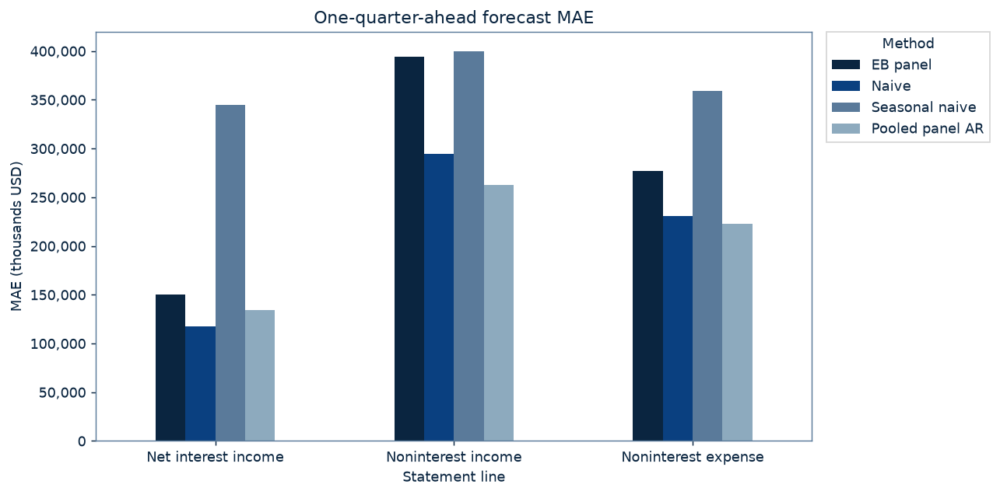
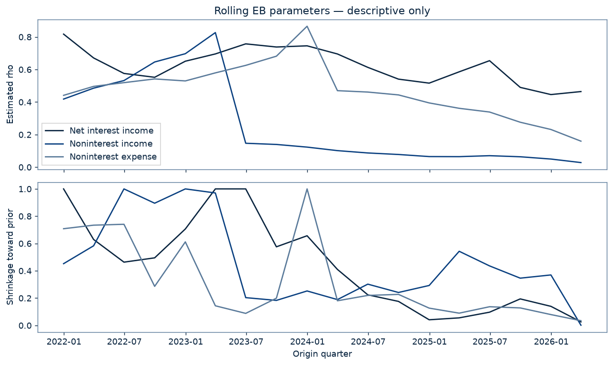

Question and design
Does the Liu-Moon-Schorfheide empirical-Bayes dynamic panel forecaster beat the Y-9C baselines one quarter ahead on three FR Y-9C income-statement lines for the top-50 BHC panel?
Top 50 BHCs by reported BHCK2170 at each origin t, RSSD ID breaks ties; identical to Y-9C (y9c.forecast.design). Targets: 2022Q1–2026Q2; origins: 2021Q4–2026Q1. Per line, the Y-9C case rule from y9c.forecast: bank selected at origin t, target X_t+1 observed, X_t and X_t-3 observed. All four methods are scored on exactly the same cases within a line.
thousands USD; quarterly flows de-cumulated from calendar-year YTD by the shared y9c panel code (y9c.panel.decumulate). Errors receive equal weight per BHC-quarter.
The pre-registered bar
For a given line, eb_panel PASSES iff MAE(eb_panel) < MAE(naive) AND the full-sample clustered DM two-sided p-value on absolute error (naive vs eb_panel) <= 0.05. An undefined p-value is a FAIL.
Fixed pre-registration ·
Commit 3ea20c8f34e62927ea8b8dac54d19f34e4a17717 ·
Commit time: 2026-09-26T17:14:22-04:00.
SHA-256: 915d8b220f9dcbdc844d464f7b98db739cc986fa48f9f14e0ed7b73d01ffa68f.
0 of 3 lines pass the pre-registered bar
No multiplicity adjustment across lines or losses; each line has its own pre-registered verdict. RMSE, squared-error DM, comparisons with seasonal naive and pooled AR, and parameter summaries are descriptive only.
DM differential = L(baseline) − L(EB panel), error = forecast − actual. Positive t favors EB. CR1 standard errors cluster by target quarter; two-sided p uses Student t(G−1). There is no correction for dependence between quarters. Undefined p means FAIL.
Net interest income (BHCK4074)
| Method | Forecasts (count) | MAE (thousands USD) | RMSE (thousands USD) | DM t · absolute error | DM p · absolute error | DM t · squared error | DM p · squared error |
|---|---|---|---|---|---|---|---|
| EB panel | 893 | 150,011 | 341,810 | — | — | — | — |
| Naive | 893 | 117,823 | 275,791 | -3.522 | 0.0026 | -2.174 | 0.0441 |
| Seasonal naive | 893 | 345,029 | 767,684 | 7.137 | 0.0000 | 4.212 | 0.0006 |
| Pooled panel AR | 893 | 134,049 | 303,111 | -1.676 | 0.1119 | -1.478 | 0.1576 |
FAIL: EB MAE 150,011 >= naive MAE 117,823 thousands USD; absolute-error DM p = 0.0026 (bar ≤ 0.05). Verdicts use unrounded values.
EB fallbacks: 3; pooled AR fallbacks: 21. Of 900 selected origin–BHC pairs, 6 lack targets and 1 additional pair lacks current or seasonal history. Estimation membership precedes these evaluation exclusions.
Noninterest income (BHCK4079)
| Method | Forecasts (count) | MAE (thousands USD) | RMSE (thousands USD) | DM t · absolute error | DM p · absolute error | DM t · squared error | DM p · squared error |
|---|---|---|---|---|---|---|---|
| EB panel | 893 | 394,099 | 961,547 | — | — | — | — |
| Naive | 893 | 294,201 | 844,418 | -4.756 | 0.0002 | -0.981 | 0.3406 |
| Seasonal naive | 893 | 399,874 | 953,525 | 0.171 | 0.8665 | -0.047 | 0.9631 |
| Pooled panel AR | 893 | 262,576 | 709,227 | -6.086 | 0.0000 | -1.445 | 0.1667 |
FAIL: EB MAE 394,099 >= naive MAE 294,201 thousands USD; absolute-error DM p = 0.0002 (bar ≤ 0.05). Verdicts use unrounded values.
EB fallbacks: 3; pooled AR fallbacks: 4. Of 900 selected origin–BHC pairs, 6 lack targets and 1 additional pair lacks current or seasonal history. Estimation membership precedes these evaluation exclusions.
Noninterest expense (BHCK4093)
| Method | Forecasts (count) | MAE (thousands USD) | RMSE (thousands USD) | DM t · absolute error | DM p · absolute error | DM t · squared error | DM p · squared error |
|---|---|---|---|---|---|---|---|
| EB panel | 893 | 277,329 | 596,965 | — | — | — | — |
| Naive | 893 | 230,601 | 561,540 | -2.680 | 0.0158 | -0.937 | 0.3617 |
| Seasonal naive | 893 | 359,409 | 743,121 | 3.331 | 0.0040 | 2.083 | 0.0527 |
| Pooled panel AR | 893 | 222,663 | 509,361 | -2.786 | 0.0127 | -2.355 | 0.0308 |
FAIL: EB MAE 277,329 >= naive MAE 230,601 thousands USD; absolute-error DM p = 0.0158 (bar ≤ 0.05). Verdicts use unrounded values.
EB fallbacks: 3; pooled AR fallbacks: 7. Of 900 selected origin–BHC pairs, 6 lack targets and 1 additional pair lacks current or seasonal history. Estimation membership precedes these evaluation exclusions.
Diagnostics from the Chief of Staff review · not pre-registered
Descriptive only. These notes come from the Chief of Staff's review of the result. They are diagnostics, not pre-registered tests: they were measured after the result was known and do not change any verdict or table value above. Gaps are EB MAE minus naive MAE, in millions of USD (equal weight per BHC-quarter, same 893 cases per line).
- Acquisition spikes in noninterest income. First Citizens BancShares reported 2023Q1 noninterest income of 10,339,597 thousand USD (482,722 in 2022Q4), driven by the bargain-purchase gain on its Silicon Valley Bank acquisition. Flagstar Financial (RSSD 2132932, then filing as New York Community Bancorp) had a 2023Q1 spike to 2,085,260 thousand USD (217,003 in 2022Q4). While such a quarter sits in the 12-quarter window it inflates the estimated noise variance and lowers estimated persistence (see the parameter figure). First Citizens alone accounts for 24.4M of the 99.9M noninterest-income MAE gap versus naive.
- Lagged-asset scaling in merger quarters. Because y(t) = 400·X(t)/A(t−1) and the level forecast multiplies by A(t)/400, the persistence part of the forecast is X(t)·A(t)/A(t−1). In a merger quarter the flow already jumps with the acquisition and the forecast is scaled up again by the asset jump, so merger quarters are hit twice. This costs 8.4M (NII), 25.6M (noninterest income) and 34.8M (noninterest expense) of the MAE gap versus naive.
- Low estimated persistence. The remaining gap mainly reflects low estimated rho (median about 0.63 for NII across origins; see the parameter summary), which pulls forecasts toward each bank's window mean while NII trended through the 2022–2024 rate cycle. The Tweedie shrinkage step itself costs only about 1M (NII), 17M (noninterest income) and 6M (noninterest expense) relative to the unshrunk plug-in intercepts.
Published whatever the result. The specification and pass bar were committed before the first real-data run, the real data were run once, and this page reports that run as it came out, including the 0-of-3 outcome.
Specification and paper deviations
y_it = lambda_i + rho * y_i,t-1 + alpha' s_t + u_it, u_it ~ iid N(0, sigma^2)
- y_it = 400 * X_it / A_i,t-1: the de-cumulated quarterly flow X (thousands USD) divided by the bank's own BHCK2170 total assets at the previous calendar quarter-end, annualized percent (LMS scale PPNR by assets times 400). Lagged assets are used so that the level forecast needs only A_it, known at origin t. Calendar-key lookups; no bridging of gaps.
- Xhat_i,t+1 = yhat_i,t+1 * A_it / 400
- Rolling: at origin t the estimation sample for bank i is y_i,t-11..y_it (T = 12 equations) with initial condition y_i0 = y_i,t-12 (LMS use rolling samples of T+1 observations plus the target).
- s_t = (1{q(t)=1}, 1{q(t)=2}, 1{q(t)=3}) - 1/4, common coefficients alpha across banks, deterministic calendar terms known in advance. LMS remove seasonality by annual time aggregation; a one-quarter-ahead quarterly forecast cannot, so centered quarter-of-year dummies enter as common regressors Z (LMS eq. 1). With T = 12 each quarter appears three times, so s_t averages to zero over the window.
- QMLE (LMS eq. 24): maximize the integrated Gaussian likelihood jointly over (rho, alpha, sigma^2, phi0, phi1, omega^2). (phi0, phi1, sigma^2, omega^2) are profiled in closed form given (rho, alpha); (rho, alpha) are found numerically. Refit at every origin on data dated <= t only.
- lambda_i | y_i0 ~ N(phi0 + phi1 * y_i0, omega^2), omega^2 >= 0
- Posterior mean E[lambda_i | lambda_hat_i, y_i0] = lambda_hat_i + (sigma^2 / T) * d/d lambda_hat log p_hat(lambda_hat_i | y_i0), where lambda_hat_i = mean over the window of (y_it - rho y_i,t-1 - alpha' s_t) and p_hat is the estimated marginal density of the sufficient statistic, N(phi0 + phi1 y_i0, omega^2 + sigma^2 / T) (LMS eqs. 17, 20, 30).
- Banks selected into the top 50 by BHCK2170 at origin t (y9c.forecast.design rule, RSSD tie-break) that have all 13 ratios y_i,t-12..y_it observed. Selection uses only data dated <= t and never depends on target (t+1) availability.
- An evaluation case whose bank lacks the complete 13-ratio window (entry, missing or non-positive lagged assets, missing de-cumulated flow) receives the naive forecast; counts are reported per line.
- T, transform, regressors, prior family and estimator are fixed here. No trimming, winsorizing, clipping or case removal; nonfinite forecasts raise an error.
Imported from y9c.forecast (not reimplemented): naive Xhat_t+1 = X_t; seasonal naive Xhat_t+1 = X_t-3; pooled AR on log growth g(s+1) = a + b1 g(s) + b4 g(s-3), expanding pooled OLS on historical top-50 rows with s+1 <= t, naive fallback when log inputs are missing or non-positive.
Deviations from the paper: quarterly rather than annual forecasting; a top-50 cross-section (N≈50 before incomplete-window exclusions) rather than all BHCs; seasonal dummies; no macro covariates; no outlier elimination. No trimming, winsorization, clipping or case removal.
EB parameter summary · Descriptive only
Minimum, median and maximum across origin-specific fits; shrinkage is the weight toward the CRE prior mean.
| Line | Parameter | Minimum | Median | Maximum |
|---|---|---|---|---|
| Net interest income | rho | 0.4461 | 0.6321 | 0.8173 |
| Net interest income | shrinkage | 0.0258 | 0.4368 | 1.0000 |
| Net interest income | omega2 | 0.0000 | 0.0161 | 0.1227 |
| Noninterest income | rho | 0.0283 | 0.1125 | 0.8267 |
| Noninterest income | shrinkage | 0.0015 | 0.3580 | 1.0000 |
| Noninterest income | omega2 | 0.0000 | 0.3786 | 10.5041 |
| Noninterest expense | rho | 0.1598 | 0.4657 | 0.8657 |
| Noninterest expense | shrinkage | 0.0347 | 0.1900 | 1.0000 |
| Noninterest expense | omega2 | 0.0000 | 0.1709 | 0.4612 |
Per-year errors and DM · Descriptive only
Four target-quarter clusters per complete year and two in 2026 give weak inference; these breakdowns do not change the full-sample verdicts.
Net interest income · Descriptive only
| Target year | Method | Forecasts (count) | MAE (thousands USD) | RMSE (thousands USD) |
|---|---|---|---|---|
| 2022 | Naive | 198 | 192,430 | 414,746 |
| 2022 | Seasonal naive | 198 | 458,286 | 917,090 |
| 2022 | Pooled panel AR | 198 | 219,620 | 467,761 |
| 2022 | EB panel | 198 | 230,652 | 481,822 |
| 2023 | Naive | 199 | 104,898 | 213,573 |
| 2023 | Seasonal naive | 199 | 462,896 | 1,027,732 |
| 2023 | Pooled panel AR | 199 | 144,051 | 244,311 |
| 2023 | EB panel | 199 | 149,591 | 352,280 |
| 2024 | Naive | 200 | 79,490 | 159,863 |
| 2024 | Seasonal naive | 200 | 198,306 | 359,477 |
| 2024 | Pooled panel AR | 200 | 94,571 | 202,791 |
| 2024 | EB panel | 200 | 87,095 | 167,253 |
| 2025 | Naive | 198 | 110,835 | 294,096 |
| 2025 | Seasonal naive | 198 | 268,043 | 619,879 |
| 2025 | Pooled panel AR | 198 | 102,579 | 287,348 |
| 2025 | EB panel | 198 | 133,577 | 308,464 |
| 2026 | Naive | 98 | 85,686 | 161,297 |
| 2026 | Seasonal naive | 98 | 331,839 | 697,178 |
| 2026 | Pooled panel AR | 98 | 84,997 | 152,253 |
| 2026 | EB panel | 98 | 149,541 | 306,992 |
Per-year DM · Descriptive only
| Target year | Baseline | Loss | Forecasts (count) | G | df | DM t | Two-sided p | Inference |
|---|---|---|---|---|---|---|---|---|
| 2022 | Naive | Absolute error | 198 | 4 | 3 | -1.248 | 0.3005 | descriptive only (G=4) |
| 2022 | Naive | Squared error | 198 | 4 | 3 | -0.835 | 0.4649 | descriptive only (G=4) |
| 2023 | Naive | Absolute error | 199 | 4 | 3 | -5.383 | 0.0126 | descriptive only (G=4) |
| 2023 | Naive | Squared error | 199 | 4 | 3 | -3.373 | 0.0433 | descriptive only (G=4) |
| 2024 | Naive | Absolute error | 200 | 4 | 3 | -0.914 | 0.4279 | descriptive only (G=4) |
| 2024 | Naive | Squared error | 200 | 4 | 3 | -0.363 | 0.7408 | descriptive only (G=4) |
| 2025 | Naive | Absolute error | 198 | 4 | 3 | -0.953 | 0.4110 | descriptive only (G=4) |
| 2025 | Naive | Squared error | 198 | 4 | 3 | -0.218 | 0.8413 | descriptive only (G=4) |
| 2026 | Naive | Absolute error | 98 | 2 | 1 | -4.853 | 0.1294 | descriptive only (G=2) |
| 2026 | Naive | Squared error | 98 | 2 | 1 | -3.061 | 0.2010 | descriptive only (G=2) |
| 2022 | Seasonal naive | Absolute error | 198 | 4 | 3 | 4.105 | 0.0262 | descriptive only (G=4) |
| 2022 | Seasonal naive | Squared error | 198 | 4 | 3 | 2.200 | 0.1152 | descriptive only (G=4) |
| 2023 | Seasonal naive | Absolute error | 199 | 4 | 3 | 5.003 | 0.0154 | descriptive only (G=4) |
| 2023 | Seasonal naive | Squared error | 199 | 4 | 3 | 3.215 | 0.0488 | descriptive only (G=4) |
| 2024 | Seasonal naive | Absolute error | 200 | 4 | 3 | 3.961 | 0.0287 | descriptive only (G=4) |
| 2024 | Seasonal naive | Squared error | 200 | 4 | 3 | 2.780 | 0.0690 | descriptive only (G=4) |
| 2025 | Seasonal naive | Absolute error | 198 | 4 | 3 | 2.737 | 0.0715 | descriptive only (G=4) |
| 2025 | Seasonal naive | Squared error | 198 | 4 | 3 | 1.998 | 0.1396 | descriptive only (G=4) |
| 2026 | Seasonal naive | Absolute error | 98 | 2 | 1 | 5.149 | 0.1221 | descriptive only (G=2) |
| 2026 | Seasonal naive | Squared error | 98 | 2 | 1 | 3.028 | 0.2031 | descriptive only (G=2) |
| 2022 | Pooled panel AR | Absolute error | 198 | 4 | 3 | -0.427 | 0.6983 | descriptive only (G=4) |
| 2022 | Pooled panel AR | Squared error | 198 | 4 | 3 | -0.241 | 0.8254 | descriptive only (G=4) |
| 2023 | Pooled panel AR | Absolute error | 199 | 4 | 3 | -0.418 | 0.7040 | descriptive only (G=4) |
| 2023 | Pooled panel AR | Squared error | 199 | 4 | 3 | -2.661 | 0.0762 | descriptive only (G=4) |
| 2024 | Pooled panel AR | Absolute error | 200 | 4 | 3 | 0.323 | 0.7678 | descriptive only (G=4) |
| 2024 | Pooled panel AR | Squared error | 200 | 4 | 3 | 0.700 | 0.5343 | descriptive only (G=4) |
| 2025 | Pooled panel AR | Absolute error | 198 | 4 | 3 | -2.941 | 0.0604 | descriptive only (G=4) |
| 2025 | Pooled panel AR | Squared error | 198 | 4 | 3 | -0.310 | 0.7766 | descriptive only (G=4) |
| 2026 | Pooled panel AR | Absolute error | 98 | 2 | 1 | -2.317 | 0.2594 | descriptive only (G=2) |
| 2026 | Pooled panel AR | Squared error | 98 | 2 | 1 | -2.175 | 0.2744 | descriptive only (G=2) |
Noninterest income · Descriptive only
| Target year | Method | Forecasts (count) | MAE (thousands USD) | RMSE (thousands USD) |
|---|---|---|---|---|
| 2022 | Naive | 198 | 245,868 | 527,486 |
| 2022 | Seasonal naive | 198 | 447,734 | 940,296 |
| 2022 | Pooled panel AR | 198 | 264,554 | 553,428 |
| 2022 | EB panel | 198 | 372,991 | 731,858 |
| 2023 | Naive | 199 | 379,810 | 1,197,077 |
| 2023 | Seasonal naive | 199 | 325,627 | 907,681 |
| 2023 | Pooled panel AR | 199 | 329,596 | 976,553 |
| 2023 | EB panel | 199 | 469,456 | 1,518,550 |
| 2024 | Naive | 200 | 250,392 | 618,334 |
| 2024 | Seasonal naive | 200 | 417,835 | 970,129 |
| 2024 | Pooled panel AR | 200 | 216,449 | 489,342 |
| 2024 | EB panel | 200 | 320,079 | 550,428 |
| 2025 | Naive | 198 | 274,056 | 861,661 |
| 2025 | Seasonal naive | 198 | 326,548 | 802,459 |
| 2025 | Pooled panel AR | 198 | 214,491 | 664,058 |
| 2025 | EB panel | 198 | 417,302 | 843,581 |
| 2026 | Naive | 98 | 348,125 | 863,164 |
| 2026 | Seasonal naive | 98 | 565,441 | 1,266,438 |
| 2026 | Pooled panel AR | 98 | 313,774 | 805,318 |
| 2026 | EB panel | 98 | 387,904 | 777,234 |
Per-year DM · Descriptive only
| Target year | Baseline | Loss | Forecasts (count) | G | df | DM t | Two-sided p | Inference |
|---|---|---|---|---|---|---|---|---|
| 2022 | Naive | Absolute error | 198 | 4 | 3 | -4.882 | 0.0164 | descriptive only (G=4) |
| 2022 | Naive | Squared error | 198 | 4 | 3 | -2.020 | 0.1367 | descriptive only (G=4) |
| 2023 | Naive | Absolute error | 199 | 4 | 3 | -1.976 | 0.1427 | descriptive only (G=4) |
| 2023 | Naive | Squared error | 199 | 4 | 3 | -1.003 | 0.3897 | descriptive only (G=4) |
| 2024 | Naive | Absolute error | 200 | 4 | 3 | -1.100 | 0.3518 | descriptive only (G=4) |
| 2024 | Naive | Squared error | 200 | 4 | 3 | 0.306 | 0.7798 | descriptive only (G=4) |
| 2025 | Naive | Absolute error | 198 | 4 | 3 | -4.354 | 0.0224 | descriptive only (G=4) |
| 2025 | Naive | Squared error | 198 | 4 | 3 | 0.128 | 0.9061 | descriptive only (G=4) |
| 2026 | Naive | Absolute error | 98 | 2 | 1 | -0.409 | 0.7531 | descriptive only (G=2) |
| 2026 | Naive | Squared error | 98 | 2 | 1 | 0.224 | 0.8600 | descriptive only (G=2) |
| 2022 | Seasonal naive | Absolute error | 198 | 4 | 3 | 6.384 | 0.0078 | descriptive only (G=4) |
| 2022 | Seasonal naive | Squared error | 198 | 4 | 3 | 3.555 | 0.0380 | descriptive only (G=4) |
| 2023 | Seasonal naive | Absolute error | 199 | 4 | 3 | -2.323 | 0.1028 | descriptive only (G=4) |
| 2023 | Seasonal naive | Squared error | 199 | 4 | 3 | -1.264 | 0.2956 | descriptive only (G=4) |
| 2024 | Seasonal naive | Absolute error | 200 | 4 | 3 | 1.424 | 0.2497 | descriptive only (G=4) |
| 2024 | Seasonal naive | Squared error | 200 | 4 | 3 | 1.291 | 0.2873 | descriptive only (G=4) |
| 2025 | Seasonal naive | Absolute error | 198 | 4 | 3 | -3.800 | 0.0320 | descriptive only (G=4) |
| 2025 | Seasonal naive | Squared error | 198 | 4 | 3 | -0.836 | 0.4645 | descriptive only (G=4) |
| 2026 | Seasonal naive | Absolute error | 98 | 2 | 1 | 128.984 | 0.0049 | descriptive only (G=2) |
| 2026 | Seasonal naive | Squared error | 98 | 2 | 1 | 6.501 | 0.0972 | descriptive only (G=2) |
| 2022 | Pooled panel AR | Absolute error | 198 | 4 | 3 | -6.554 | 0.0072 | descriptive only (G=4) |
| 2022 | Pooled panel AR | Squared error | 198 | 4 | 3 | -2.600 | 0.0804 | descriptive only (G=4) |
| 2023 | Pooled panel AR | Absolute error | 199 | 4 | 3 | -1.734 | 0.1813 | descriptive only (G=4) |
| 2023 | Pooled panel AR | Squared error | 199 | 4 | 3 | -1.030 | 0.3787 | descriptive only (G=4) |
| 2024 | Pooled panel AR | Absolute error | 200 | 4 | 3 | -2.495 | 0.0881 | descriptive only (G=4) |
| 2024 | Pooled panel AR | Squared error | 200 | 4 | 3 | -0.488 | 0.6589 | descriptive only (G=4) |
| 2025 | Pooled panel AR | Absolute error | 198 | 4 | 3 | -8.267 | 0.0037 | descriptive only (G=4) |
| 2025 | Pooled panel AR | Squared error | 198 | 4 | 3 | -2.249 | 0.1101 | descriptive only (G=4) |
| 2026 | Pooled panel AR | Absolute error | 98 | 2 | 1 | -4.022 | 0.1551 | descriptive only (G=2) |
| 2026 | Pooled panel AR | Squared error | 98 | 2 | 1 | 0.241 | 0.8491 | descriptive only (G=2) |
Noninterest expense · Descriptive only
| Target year | Method | Forecasts (count) | MAE (thousands USD) | RMSE (thousands USD) |
|---|---|---|---|---|
| 2022 | Naive | 198 | 221,308 | 450,339 |
| 2022 | Seasonal naive | 198 | 350,794 | 613,868 |
| 2022 | Pooled panel AR | 198 | 199,114 | 418,333 |
| 2022 | EB panel | 198 | 282,080 | 536,739 |
| 2023 | Naive | 199 | 269,787 | 703,104 |
| 2023 | Seasonal naive | 199 | 422,458 | 894,476 |
| 2023 | Pooled panel AR | 199 | 263,779 | 673,015 |
| 2023 | EB panel | 199 | 290,234 | 676,242 |
| 2024 | Naive | 200 | 270,987 | 711,180 |
| 2024 | Seasonal naive | 200 | 342,805 | 794,679 |
| 2024 | Pooled panel AR | 200 | 292,610 | 610,378 |
| 2024 | EB panel | 200 | 304,845 | 695,616 |
| 2025 | Naive | 198 | 154,829 | 310,859 |
| 2025 | Seasonal naive | 198 | 295,854 | 588,196 |
| 2025 | Pooled panel AR | 198 | 140,551 | 283,993 |
| 2025 | EB panel | 198 | 245,279 | 515,977 |
| 2026 | Naive | 98 | 240,476 | 481,985 |
| 2026 | Seasonal naive | 98 | 411,082 | 811,297 |
| 2026 | Pooled panel AR | 98 | 209,902 | 409,311 |
| 2026 | EB panel | 98 | 250,125 | 459,605 |
Per-year DM · Descriptive only
| Target year | Baseline | Loss | Forecasts (count) | G | df | DM t | Two-sided p | Inference |
|---|---|---|---|---|---|---|---|---|
| 2022 | Naive | Absolute error | 198 | 4 | 3 | -2.343 | 0.1009 | descriptive only (G=4) |
| 2022 | Naive | Squared error | 198 | 4 | 3 | -1.714 | 0.1851 | descriptive only (G=4) |
| 2023 | Naive | Absolute error | 199 | 4 | 3 | -0.714 | 0.5268 | descriptive only (G=4) |
| 2023 | Naive | Squared error | 199 | 4 | 3 | 0.592 | 0.5955 | descriptive only (G=4) |
| 2024 | Naive | Absolute error | 200 | 4 | 3 | -0.658 | 0.5574 | descriptive only (G=4) |
| 2024 | Naive | Squared error | 200 | 4 | 3 | 0.157 | 0.8855 | descriptive only (G=4) |
| 2025 | Naive | Absolute error | 198 | 4 | 3 | -1.959 | 0.1449 | descriptive only (G=4) |
| 2025 | Naive | Squared error | 198 | 4 | 3 | -1.588 | 0.2106 | descriptive only (G=4) |
| 2026 | Naive | Absolute error | 98 | 2 | 1 | -0.250 | 0.8442 | descriptive only (G=2) |
| 2026 | Naive | Squared error | 98 | 2 | 1 | 0.250 | 0.8440 | descriptive only (G=2) |
| 2022 | Seasonal naive | Absolute error | 198 | 4 | 3 | 2.001 | 0.1393 | descriptive only (G=4) |
| 2022 | Seasonal naive | Squared error | 198 | 4 | 3 | 1.231 | 0.3059 | descriptive only (G=4) |
| 2023 | Seasonal naive | Absolute error | 199 | 4 | 3 | 7.811 | 0.0044 | descriptive only (G=4) |
| 2023 | Seasonal naive | Squared error | 199 | 4 | 3 | 3.333 | 0.0446 | descriptive only (G=4) |
| 2024 | Seasonal naive | Absolute error | 200 | 4 | 3 | 0.503 | 0.6498 | descriptive only (G=4) |
| 2024 | Seasonal naive | Squared error | 200 | 4 | 3 | 0.373 | 0.7338 | descriptive only (G=4) |
| 2025 | Seasonal naive | Absolute error | 198 | 4 | 3 | 0.705 | 0.5318 | descriptive only (G=4) |
| 2025 | Seasonal naive | Squared error | 198 | 4 | 3 | 0.533 | 0.6308 | descriptive only (G=4) |
| 2026 | Seasonal naive | Absolute error | 98 | 2 | 1 | 4.537 | 0.1381 | descriptive only (G=2) |
| 2026 | Seasonal naive | Squared error | 98 | 2 | 1 | 4.032 | 0.1548 | descriptive only (G=2) |
| 2022 | Pooled panel AR | Absolute error | 198 | 4 | 3 | -3.190 | 0.0497 | descriptive only (G=4) |
| 2022 | Pooled panel AR | Squared error | 198 | 4 | 3 | -1.889 | 0.1553 | descriptive only (G=4) |
| 2023 | Pooled panel AR | Absolute error | 199 | 4 | 3 | -1.172 | 0.3258 | descriptive only (G=4) |
| 2023 | Pooled panel AR | Squared error | 199 | 4 | 3 | -0.181 | 0.8681 | descriptive only (G=4) |
| 2024 | Pooled panel AR | Absolute error | 200 | 4 | 3 | -0.183 | 0.8668 | descriptive only (G=4) |
| 2024 | Pooled panel AR | Squared error | 200 | 4 | 3 | -0.785 | 0.4899 | descriptive only (G=4) |
| 2025 | Pooled panel AR | Absolute error | 198 | 4 | 3 | -2.308 | 0.1042 | descriptive only (G=4) |
| 2025 | Pooled panel AR | Squared error | 198 | 4 | 3 | -1.658 | 0.1959 | descriptive only (G=4) |
| 2026 | Pooled panel AR | Absolute error | 98 | 2 | 1 | -4.425 | 0.1415 | descriptive only (G=2) |
| 2026 | Pooled panel AR | Squared error | 98 | 2 | 1 | -3.796 | 0.1640 | descriptive only (G=2) |
Figures


Data vintage
Coverage: 2018Q1–2026Q2, 34 quarters. Build time (UTC): 2026-09-26T21:15:19.490629+00:00. Source: FFIEC NIC Financial Data Download. Cached files are reused; first-seen timestamps are not claimed as original download times.
NIC download dates and cache provenance (UTC)
| Quarter | Downloaded / first seen (UTC) |
|---|---|
| 2018Q1 | 2026-09-26T03:35:21.592924+00:00 |
| 2018Q2 | 2026-09-26T03:35:22.829567+00:00 |
| 2018Q3 | 2026-09-26T03:35:24.017568+00:00 |
| 2018Q4 | 2026-09-26T03:35:25.264072+00:00 |
| 2019Q1 | 2026-09-26T03:35:26.389697+00:00 |
| 2019Q2 | 2026-09-26T03:35:27.576250+00:00 |
| 2019Q3 | 2026-09-26T03:35:28.865786+00:00 |
| 2019Q4 | 2026-09-26T03:35:30.118481+00:00 |
| 2020Q1 | 2026-09-26T03:35:31.266314+00:00 |
| 2020Q2 | 2026-09-26T03:35:32.472669+00:00 |
| 2020Q3 | 2026-09-26T03:35:33.610023+00:00 |
| 2020Q4 | 2026-09-26T03:35:34.811950+00:00 |
| 2021Q1 | 2026-09-26T03:35:35.926911+00:00 |
| 2021Q2 | 2026-09-26T03:35:37.131801+00:00 |
| 2021Q3 | 2026-09-26T03:35:38.252124+00:00 |
| 2021Q4 | 2026-09-26T03:35:39.440905+00:00 |
| 2022Q1 | 2026-09-26T03:35:40.570573+00:00 |
| 2022Q2 | 2026-09-26T03:35:41.782064+00:00 |
| 2022Q3 | 2026-09-26T03:35:42.886568+00:00 |
| 2022Q4 | 2026-09-26T03:35:44.064858+00:00 |
| 2023Q1 | 2026-09-26T03:35:45.236208+00:00 |
| 2023Q2 | 2026-09-26T03:35:46.451469+00:00 |
| 2023Q3 | 2026-09-26T03:35:47.607440+00:00 |
| 2023Q4 | 2026-09-26T03:35:48.846202+00:00 |
| 2024Q1 | 2026-09-26T03:35:49.981232+00:00 |
| 2024Q2 | 2026-09-26T03:35:51.184648+00:00 |
| 2024Q3 | 2026-09-26T03:35:52.316133+00:00 |
| 2024Q4 | 2026-09-26T03:35:53.546359+00:00 |
| 2025Q1 | 2026-09-26T03:35:54.724380+00:00 |
| 2025Q2 | 2026-09-26T03:35:55.899594+00:00 |
| 2025Q3 | 2026-09-26T03:35:57.068819+00:00 |
| 2025Q4 | 2026-09-26T03:35:58.312856+00:00 |
| 2026Q1 | 2026-09-26T03:35:59.488062+00:00 |
| 2026Q2 | 2026-09-26T03:36:00.652232+00:00 |
Run start (UTC): 2026-09-26T21:15:34.609116+00:00; git HEAD: 081a63aefba4cfc2f51360b70623fd57c799a9ee.
Tables and reproduction
overall_errors CSV · overall_errors JSON · by_year_errors CSV · by_year_errors JSON · dm_tests CSV · dm_tests JSON · eb_parameters CSV · eb_parameters JSON · verdicts JSON · run_metadata JSON · test_design JSON · vintage JSON
make statement-forecast-test
make statement-forecastThe shared y9c package supplies downloads, calendar-year de-cumulation, baseline forecasts, metrics and clustered DM. Only aggregate tables, parameters and figures are exported.
Limitations
Report-quarter backtest on currently downloaded NIC filings, as in Y-9C: period-t filings are treated as available at t; filing lags and later revisions are not modeled.
RSSD identities are used as reported, without pro-forma merger adjustments. Entrants need history; exiters retain historical training observations but missing targets are not scored. Acquisition jumps and negative de-cumulations remain. Missing predecessor quarters are never bridged or imputed.
Foreign-bank intermediate holding companies can enter the top 50; parent and subsidiary filers are not consolidated across RSSD IDs. The 2018Q3 reporting threshold change mainly affects smaller filers. Dollar losses emphasize large institutions; the latest vintage can be incomplete and contain revisions. The Gaussian CRE assumption and small estimation cross-section limit generality. Research only.
Citation
Liu, L., Moon, H. R., & Schorfheide, F. Forecasting with Dynamic Panel Data Models. NBER Working Paper 25102 (2018); Econometrica 88(1), 171–201 (2020). NBER w25102.